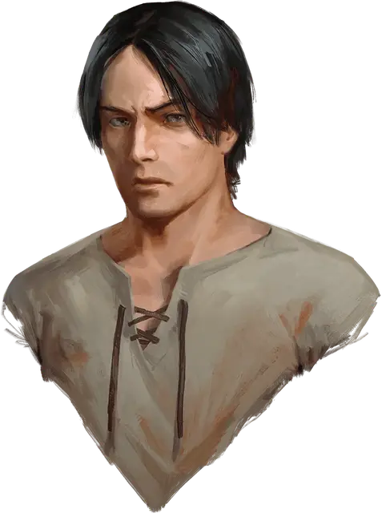

Миливой
Milivoj
Средний Гуманоид (Человек), нейтральный, именной НИП

Класс Доспеха 10
Хиты 4 (1к8)
Скорость 30 футов
| мод | спас | ||
|---|---|---|---|
| СИЛ | 15 | +2 | +2 |
| ЛОВ | 10 | +0 | +0 |
| ТЕЛ | 10 | +0 | +0 |
| мод | спас | ||
|---|---|---|---|
| ИНТ | 10 | +0 | +0 |
| МДР | 10 | +0 | +0 |
| ХАР | 10 | +0 | +0 |
Чувства пассивное Восприятие 10
Языки Общий
Опасность 0
Бонус мастерства +2
Действия
Лопата. Рукопашная атака оружием: +4 к попаданию, досягаемость 5 футов, одна цель. Попадание: Дробящий урон 4 (1к4+2).
Описание
Крепкий парень с завсегда нахмуренными бровями по имени Миливой ухаживает за землёй и роет могилы.
Миливой не признаёт лозунга бургомистра «Всё будет хорошо!» и расстроен тем, что не может защитить своих младших братьев и сестёр. Он хотел бы избавиться от проклятия Баровии, но не видит никакой надежды на побег.